Verkefni 3
Við ætlum að skoða breytingar í þroska nemenda í 1.-4. bekk. Í langtímarannsókn er 40 nemendum úr tveimur skólum fylgt eftir og framfarir þeirra í lestri metnar yfir fjögur skólaár.
Hér eru ferlar allra 40 nemendanna frá 1. upp í 4. bekk. Ef við skoðum myndina sjáum við að það er einstaklings munur strax í 1. bekk, þar sem við höfum bæði nemendur sem hafa góða færni og svo nemendur sem hafa slaka færni. Því er eðlilegt að nota slembiþáttalíkan til að meta breytingar nemenda í lestri yfir fjögra ára tímabil.
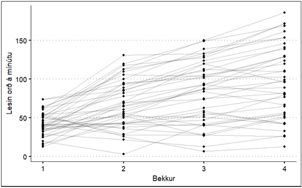
Við ætlum að prófa tvö líkön:
Líkan 1: Þar sem við gerum ráð fyrir að það sé einstaklingsmunur í lestir og færni nemenda (random intercept) aukist jafnt yfir bekkina 4.
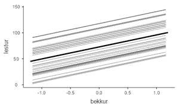
Líkan 2: Þar sem við gerum ráð fyrir að það sé einstaklingsmunur í lestri (random intercept) og færni nemenda breytist ólíkt (random slope) eftir því hvernig færni þeirra var á fyrsta tímapunkti.
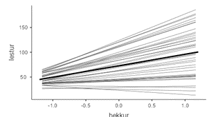
Gögnin má sækja hér:
https://github.com/auv2/2024-RASO/blob/main/data/framfarir_i_lestri.csv
Verkefnalýsing
1) Notið slembiþáttalíkan (mixed models) til þess að prófa eftirfarandi líkön.
a. Líkan 1: Þar sem við gerum ráð fyrir að það sé einstaklingsmunur í lestri og færni nemenda (random intercept) aukist jafnt yfir bekkina 4
b. Líkan 2: Þar sem við gerum ráð fyrir að það sé einstaklingsmunur í lestri (random intercept) og færni nemenda breytist ólíkt (random slope) eftir því hvernig færni þeirra var á fyrsta tímapunkti.
Byrjum á því að setja upp líkan 1 í jamovi (ef Linear Models glugginn er ekki hjá ykkur eins og sést á myndinni hér að neðan þurfið þið að sækja pakkann sjá leiðbeiningar hér Setja upp gamlj
Lestur er fylgibreytan og bekkur frumbreytan. Setjum svo nemandann í cluster variable þar sem nemandi er slembiþáttur (þ.e. hver nemandi er metinn oftar en einu sinni og við gerum ráð fyrir að það sé breytileiki í færni nemenda yfir þessi fjögur ár).
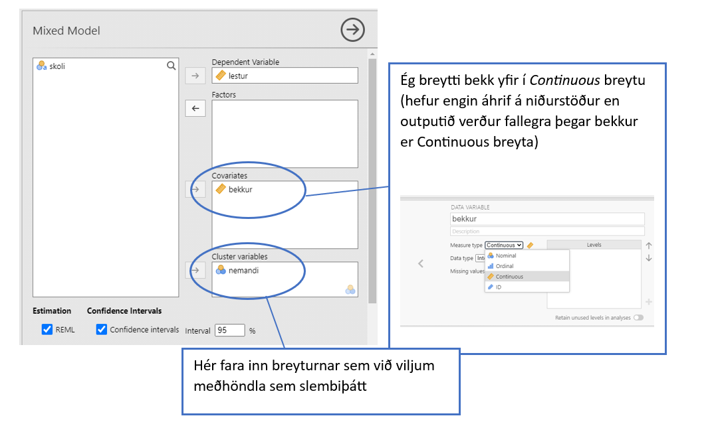
Áður en keyrslan hefst þurfum við að skilgreina hvaða breytur eru föstu áhrifin (fixed effect) og hvaða breytur eru í slembiþættinum (random effect). Breyturnar sem fara í fixed effect eru frumbreyturnar sem verið er að skoða. Í þessu dæmi erum við að skoða áhrif bekkjar (ár í skóla) á framfarir í lestri.
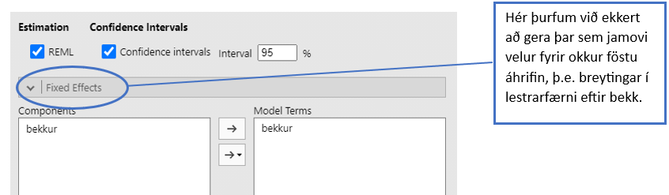
a) Byrjum á því að skoða líkan 1, bara random intercept og veljum því bara intercept |nemandi
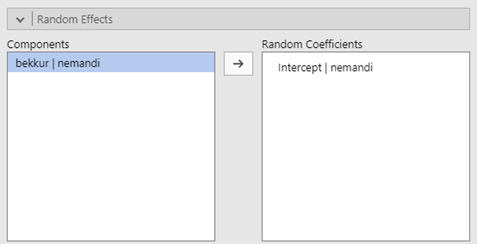
Þá ætti að birtast output sem lítur svona út
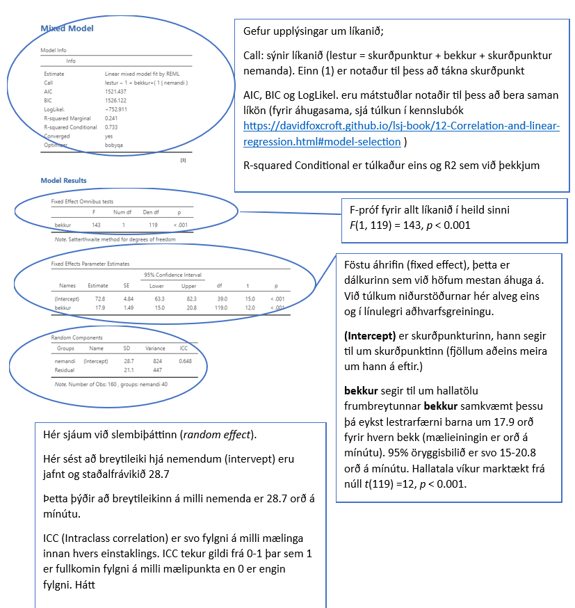
b) Skoðum því næst líkan 2, random intercept og random slope með því að velja intercept |nemandi og bekkur|nemandi
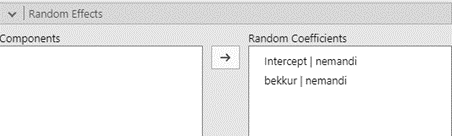
Þá ætti að birtast output sem lítur svona út (túlkum þetta output eins og fyrir ofan)
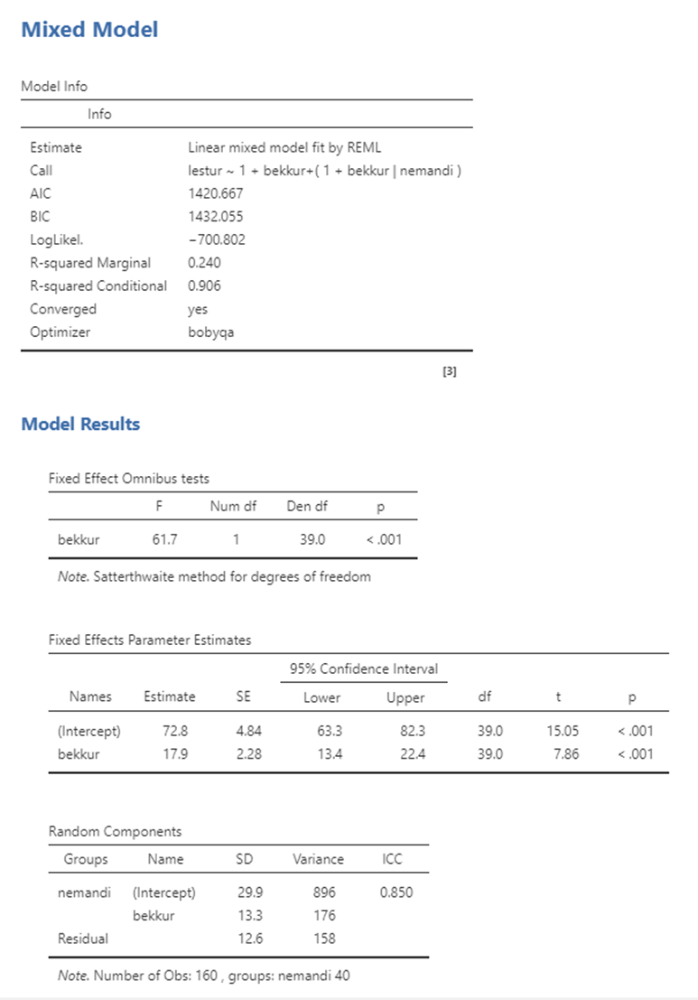
2) Berið saman líkönin tvö (t.d. leifar og R2). Hvort líkanið lýsir betur þroskaferli nemenda í lestri?
3) Teiknið þroskaferilinn fyrir líkan 1 og líkan 2.
Til þess að teikna upp ferilinn þurfum við að velja Plot og færa bekk yfir í Horizonal axis og haka við eins og hér fyrir neðan.
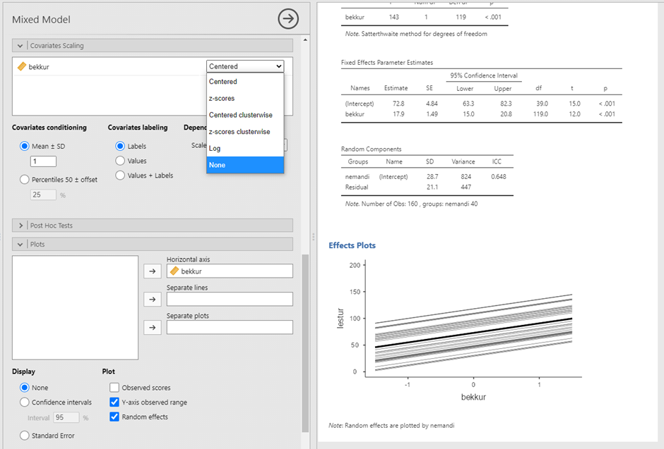
Til þess að fá myndina rétta þannig að bekkur sé frá 1-4 en ekki miðjaður (centred) á 2 þurfum við að velja Covariates Scaling Cantered None
Þá ætti outputið að verða svona þar sem bekkru tekur gildið 1-4.
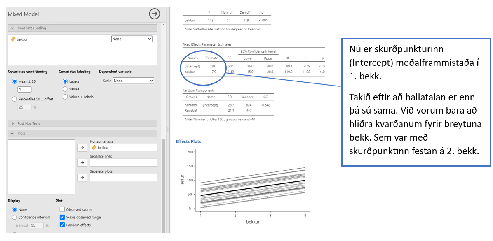
Þið gerið nákvæmlega það sama til að fá mynd fyrir líkan 2.
4) Skoðið líkan 2 en bætið við líkanið random intercept fyrir skóla. Hefur skóli einhver áhrif?